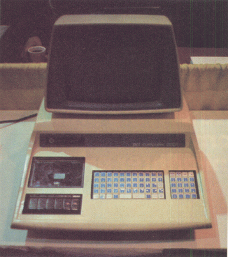
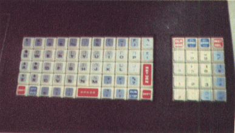
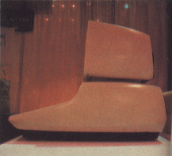

One of the most interesting new products at the NCC show in Dallas was Commodore's new PET computer. Beneath its futuristic cover, the unit features 14 K bytes of read only memory containing an 8 K BASIC package, 4 K operating system, 1 K machine language motior and 1 K diagnostic routine.
The display features 64 graphics characters as well as the standard 64 character upper case ASCII set. This gives the effect of high resolution when displayed on the built-in 9 inch (22.86 cm) video monitor. The keyboard is encoded so that by shifting to upper case, the user has access to the 64 graphics characters.
The 8 K extended BASC package was designed by Microsoft, the people who have created a number of interpreters for personal computers. It features strings, integers, multiple-dimensional arrays, 10 digit precision floating point capability, and "peek" and "poke" commands.
The price of the PET is $595 complete with 4 K bytes of programmable memory. The $795 version features 8 K bytes of programmable memory. All IO connections (excluding the built-in tape driver, keyboard and video display) are made via an IEEE-488 bus.
The PET is an excellent example of the true appliance computer: a neat, self-contained graphics oriented package designed for the mass market as well as for the serious experimenter.
|  |
| Photo 1: Commodore's new PET computer at the NCC show in Dallas. |
|  |
| Photo 2: A closeup of the PET's unusual touch-sensitive keyboard with 73 keys and 64 shifted graphics symbols in addition to ordinary upper case ASCII characters. |
|  |
| Photo 3: A side view of the PET highlightning its modernistic lines |
Published in BYTE volume 2 number 10, October 1977.
Courtesy of BYTE.com, http://www.byte.com
| This page has been created by Sami Rautiainen. | |
| Read the small print. | Last updated September 05, 2020. |